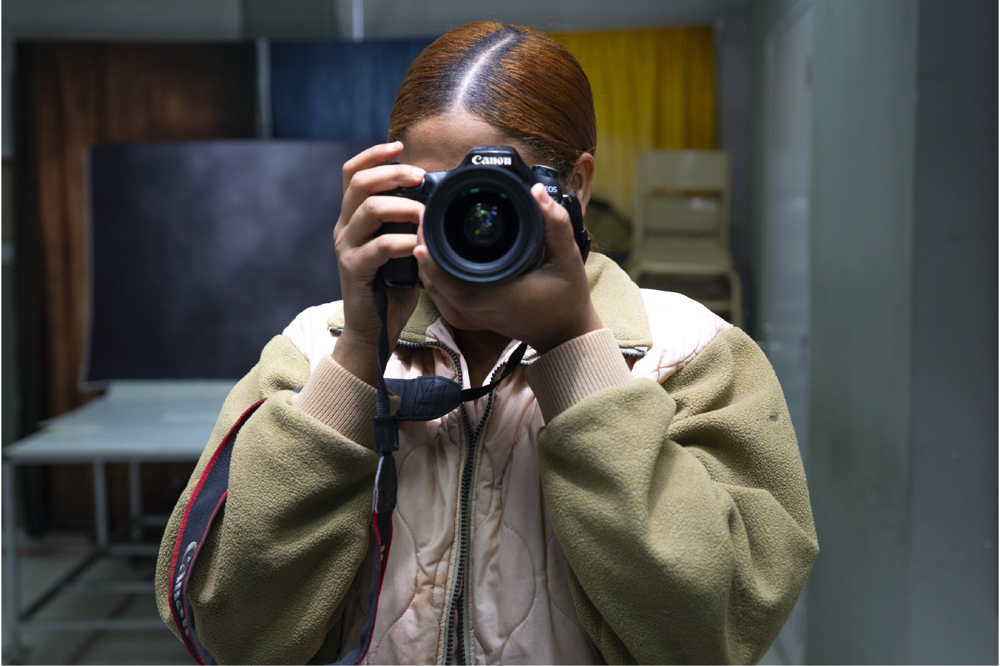
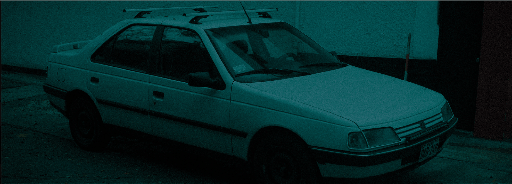
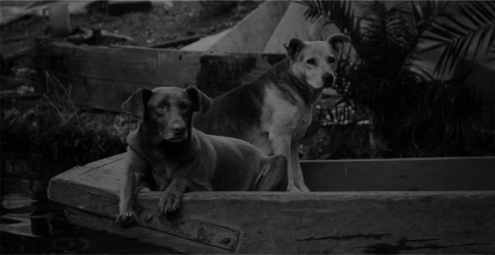
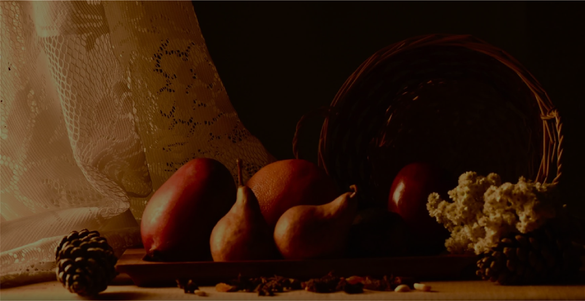

DESCRIPCIÓN
El programa de Técnico Superior en Fotografía está diseñado bajo un enfoque práctico, donde el aprendizaje se desarrolla a través de la experiencia directa. A lo largo de la carrera, se imparten tres niveles de fotografía práctica y tres niveles de postproducción, garantizando un dominio progresivo de las técnicas esenciales. Además, se incluyen dos niveles de iluminación, tanto natural como artificial, fundamentales para el desarrollo de un estilo propio y profesional.

Proyectos Estudiantiles
Proyecto Bloom of Silence

Proyecto BLONDE

Proyecto Street

Proyecto Fotografía Gastronómica